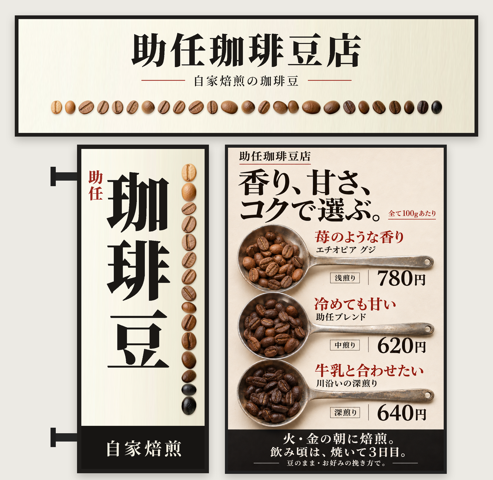
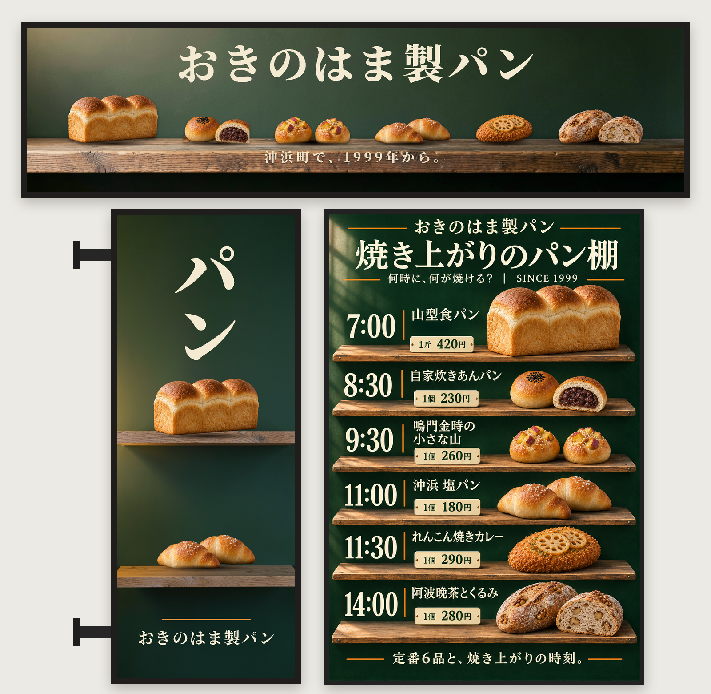

助任珈琲豆店
横長看板の下の縁に、豆を浅煎りから深煎りへ色の順に並べました。店頭メニューで浅煎り・中煎り・深煎りを3本のさじに入れて見比べるのと同じく、焙煎の度合いで選べる豆屋だと一目で分かります。袖看板は「珈琲豆」を縦に大きく置き、字の右に並べた豆の列を焙煎の目盛りにしました。

看板の見た目案 v5｜2026.11.03
店名を掲げる横長看板と、壁から突き出す袖看板です。決まった店頭メニュー（右下）と並べて、一つの店に見えるかを確かめられるようにしています。
横長看板の下の縁に、豆を浅煎りから深煎りへ色の順に並べました。店頭メニューで浅煎り・中煎り・深煎りを3本のさじに入れて見比べるのと同じく、焙煎の度合いで選べる豆屋だと一目で分かります。袖看板は「珈琲豆」を縦に大きく置き、字の右に並べた豆の列を焙煎の目盛りにしました。

横長看板の下半分を木の棚にして、定番の6品を焼き上がる順に左から並べました。パンはメニューと同じものです。袖看板は「パン」を縦に大きく置き、棚に山型食パンと塩パンをのせました。
